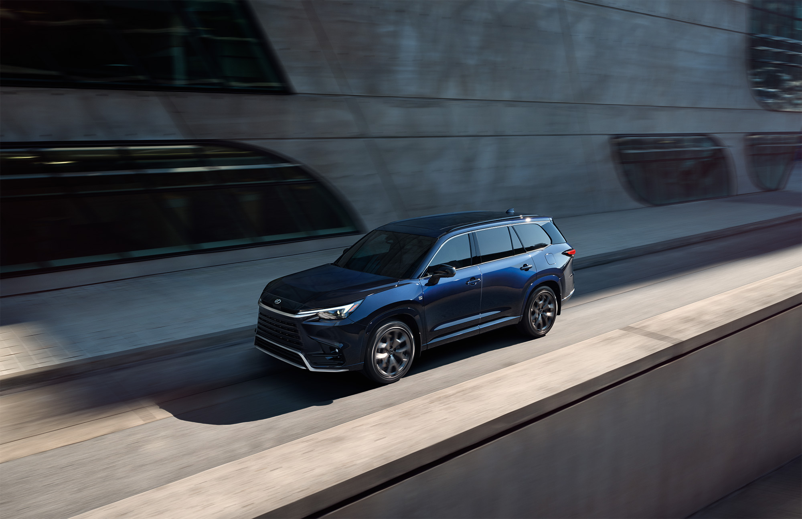
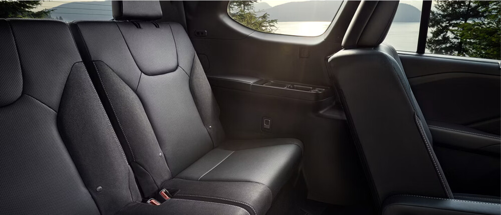
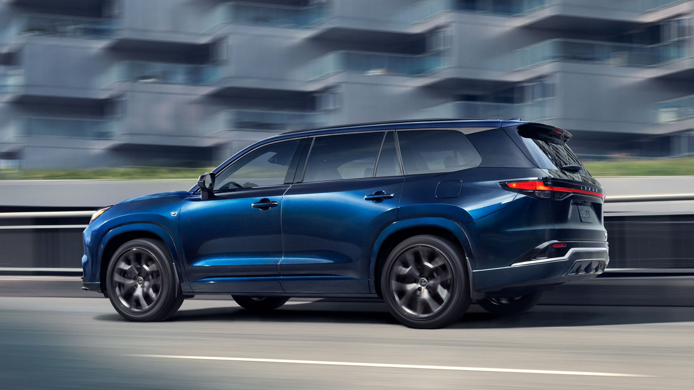
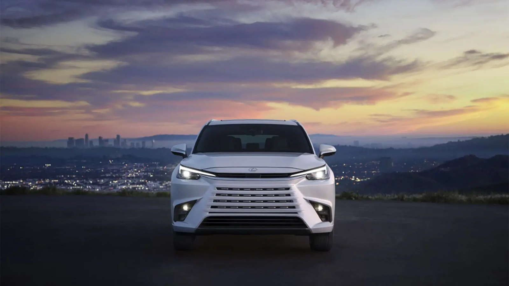
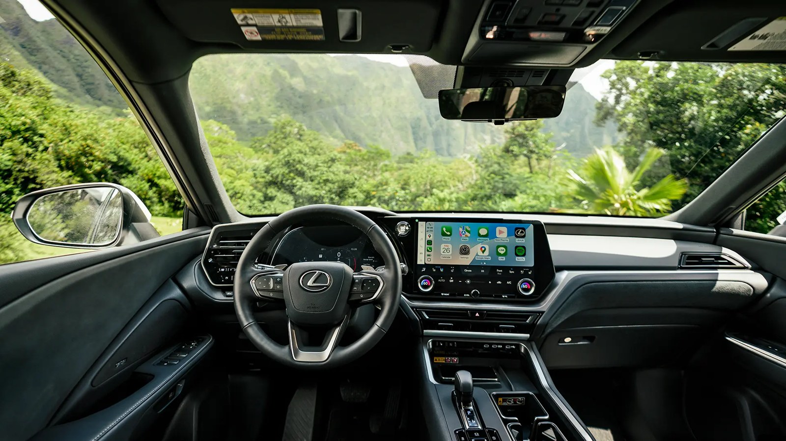
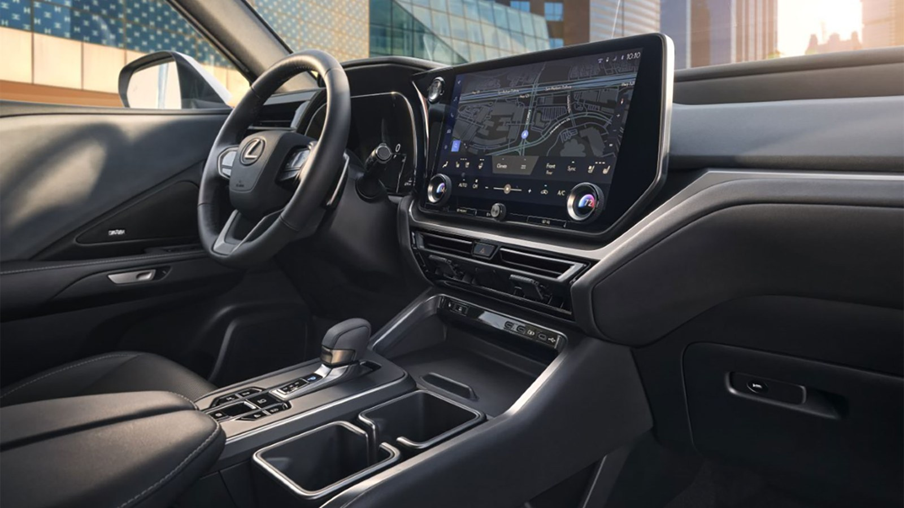
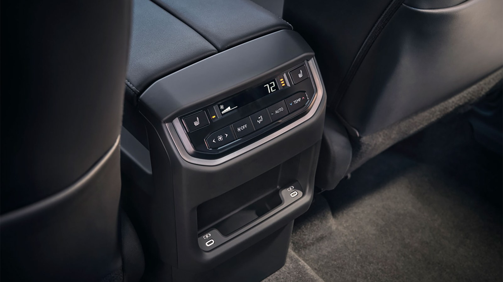

Think bigger.
Arrive in
a Lexus.
2026 Lexus TX vs.
2026 Toyota Grand Highlander
You’re shopping for room for everyone.
Make room for something extraordinary.
Three ways to
make an entrance.
275
HORSEPOWER
Your introduction to TX luxury.
Turbocharged gas power. Choose front-wheel drive or available all-wheel drive.
Explore this TX with our team14in.
Standard touchscreen · all TX models
4yr. / 50k mi.
Basic limited warranty · all TX models
6–7
Seats · configuration dependent
Basic warranty: whichever occurs first. Coverage and exclusions apply; see disclosures below.
2026 models. TX 500h and TX 550h+ figures are net combined system horsepower. Ratings require premium fuel. Availability varies; displayed models are not a representation of current inventory.
Your family needs space.
You deserve Lexus.
The school run. The weekend escape. The long way home. Your next SUV will be part of all of it.
If the Grand Highlander is on your list, put the TX on your test-drive route. Discover what a larger standard display, distinctive luxury appointments and an available plug-in hybrid can bring to your everyday drive.
Make your next stop Priority LexusThe Lexus advantage.
A compelling case for moving up.
2026 U.S. models
Standard vs. available, clearly explained.
| Lexus TX | Toyota Grand Highlander |
|---|---|
| Standard touchscreen1 | |
| 14-inch More screen, standard | 12.3-inch |
| Gas-engine horsepower2 | |
| 275 hp TX 350 | 265 hp2.4L turbo gas |
| Plug-in hybrid option2 | |
| Available TX 550h+ · 404 net combined hp | Not offeredGas, hybrid or Hybrid MAX |
| Basic limited warranty3 | |
| 4 years / 50,000 miles | 3 years / 36,000 miles |
| Maximum seating4 | |
| Up to 7 6 or 7, depending on configuration | Up to 8Depending on configuration |
Warranty time or mileage limits apply, whichever occurs first. Features vary by model and grade. TX horsepower ratings require premium fuel. See comparison notes below.
Need eight seats? The Grand Highlander offers that configuration. Looking for a luxury three-row experience? The TX deserves your attention.
Space, in perspective.
A longer exterior. A distinct approach to three-row luxury. Explore the measurements that matter to your family.
Overall exterior length · inches
Lexus TX 350203.1
Toyota Grand Highlander201.4
LEXUS TX
GRAND HIGHLANDER
The TX 350 is 1.7 inches longer overall. Exterior length does not establish greater passenger space.
2026 U.S. specifications. Length shown for non-F SPORT TX 350; body length varies by grade. Third-row legroom: published figures. Cargo measured behind the third row, all seats up. Seating shows maximum capacity, not a claim about individual seat width. Bars use a common zero baseline within each view.

Everyday life.
Beautifully upgraded.
01
Luxury you can settle into.
Available semi-aniline leather trim on TX 350 Luxury and TX 550h+ Luxury brings another reason to enjoy the journey.
02
Your playlist, reimagined.
Available 21-speaker Mark Levinson® Premium Surround Sound turns listening into part of the occasion.
03
Make the drive your own.
Available Adaptive Variable Suspension on F SPORT grades adjusts damping to driving conditions.
Optional features shown or described may require a specific grade or package. See dealer for vehicle equipment.
Make it your TX.
Explore the 2026 palette. Choose your drivetrain and grade, then move between exterior finishes and interior materials.
Digital gradients are illustrative approximations, not paint or upholstery samples. Colors, materials and combinations vary by grade; confirm the actual vehicle with Priority Lexus Virginia Beach. Additional-cost finishes may apply.
A closer look.










Manufacturer imagery illustrates the TX family. Equipment, colors and model years shown may differ from available 2026 inventory.

Before you decide,
drive the TX.
Bring your questions. Bring the family. Find out how the Lexus TX fits your life.
Priority Lexus
Shop TX inventoryYour TX questions.
Answered.
Why consider the 2026 Lexus TX alongside the Grand Highlander?
The TX combines three-row versatility with a standard 14-inch touchscreen, available luxury appointments and three powertrain choices. Use the comparison above to weigh the features you value, then test-drive the configuration you are considering.
Does the Lexus TX have three rows?
Yes. The 2026 TX has three rows and seats six or seven, depending on its grade and second-row configuration. If eight seats are essential, the Grand Highlander offers an eight-passenger configuration.
Which 2026 TX powertrain should I explore?
The TX 350 uses a turbocharged gas engine; the TX 500h is a hybrid; and the TX 550h+ is a plug-in hybrid. Your driving habits, charging access and preferred equipment can help guide the choice. Ask the dealership about availability.
How much cargo space is behind the third row?
Lexus lists 20.2 cubic feet behind the third row for the 2026 TX. Bring your stroller, sports bags or everyday gear to your visit to see how the space works for your family.
What should I compare during a test drive?
Try third-row access, passenger comfort, your usual cargo and the touchscreen controls. Compare specific grades and options, and ask for pricing and equipment details for the actual vehicles you are considering.